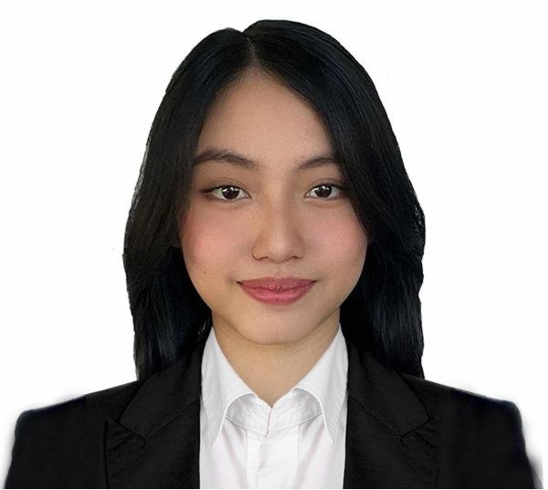

Hello, I'm ♡
First Year Student
University of the Cordilleras
I am a first-year Multimedia Arts student who loves creativity, art, design, and exploring different ways to express ideas through digital media.
This portfolio showcases my journey as a student, the skills I am developing, my creative interests, and the goals I hope to achieve as a future multimedia artist.
A little bit about the girl behind the creativity ♡
I am Jazzmine Via Chavenia Mendoza, born on January 08, 2006, in Sto. Domingo, Nueva Ecija. I am currently a first-year Bachelor of Science in Multimedia Arts student at the University of the Cordilleras, standing at 149.86 cm and weighing 46 kg. A proud Filipino of Roman Catholic faith, I speak English and Tagalog, and I am deeply passionate about discovering different forms of creativity and learning how art can be transformed through technology.
As a Multimedia Arts student, I am slowly building my knowledge in design, digital art, photography, video, animation, and other forms of visual communication.
I love creating things that are visually pleasing and meaningful. I enjoy experimenting with colors, layouts, images, typography, and different digital styles.
I believe that creativity is not only about making beautiful things, but also about communicating an idea and telling a story.
Skills I am learning and developing as a Multimedia Arts student
Creating posters, layouts, social media graphics, presentations, and other visual materials.
Exploring digital drawing, illustration, colors, shapes, and different artistic styles.
Learning composition, lighting, framing, angles, and visual storytelling through photography.
Developing skills in video editing, transitions, storytelling, music, and visual effects.
Learning how fonts, spacing, alignment, and text styles can improve visual communication.
Developing original concepts and finding creative ways to communicate ideas through multimedia.
My academic journey so far
Currently a first-year student exploring the fundamentals of multimedia arts, visual design, digital creativity, technology, and communication.
Afan Salvador Street, St. John District, Guimba, Nueva Ecija. Built strong analytical, problem-solving, and structural design capabilities while balancing creative visual arts.
Brgy. Baloc, Sto. Domingo, Nueva Ecija. Developed foundational skills in teamwork, technical execution, practical communication, and academic project building.
Brgy. Triala, Guimba, Nueva Ecija. Laid down the early building blocks of curiosity, academic discipline, and a lifelong passion for creativity and expression.
Recognition and achievements along my journey ♡
With Honors (2012–2024)
Consistently maintaining academic excellence and dedication to studies over the years.
Champion (2023 and 2024)
Division Schools Press Conference champion showcasing media, storytelling, and broadcasting skills.
2nd Place
Regional Schools Press Conference excellence in broadcast journalism and production.
3rd Place
Continued success and recognition at the regional broadcasting level.
1st Place (2023 & 2024)
Awarded for Best Technical performance in both DSPC and RSPC broadcasting events.
Champion (2023)
Recognized for outstanding video editing, creativity, and science communication.
Champion
Recognized for excellence in creative journalistic storytelling and feature composition.
Champion
Demonstrated strong visual communication and critical commentary through cartooning.
Champion
Excellence in expressing structured opinions, analysis, and persuasive editorial viewpoints.
Things that inspire my creativity
Creating cute characters, illustrations, concepts, and digital artwork.
Capturing moments, places, people, and details through creative photography.
Exploring storytelling through video, editing, music, and visual effects.
Designing websites with creative layouts, colors, typography, and user-friendly interfaces.
Exploring colors, themes, layouts, fonts, and different visual styles.
Turning ideas into creative school projects, presentations, and multimedia outputs.
Learning, creating, and growing one project at a time
Understanding the foundations of multimedia arts and discovering different creative disciplines.
Applying what I learn through school activities, projects, designs, and creative experiments.
Learning from mistakes, accepting feedback, and continuously improving my creative skills.
Building confidence and preparing myself for future opportunities in the creative industry.
Little dreams that I am working toward ♡
Continue learning graphic design, photography, video editing, illustration, animation, and other multimedia skills.
Create meaningful projects that represent my creativity, personality, progress, and abilities.
Participate in creative projects, organizations, collaborations, competitions, and other opportunities.
Become a skilled and confident multimedia artist who can use creativity and technology to tell stories and create meaningful experiences.
There is always a new way to express an idea.
Every mistake is an opportunity to improve.
Loving what you create makes the journey meaningful.
Small progress can lead to something beautiful.
The heart behind my dedication and drive ♡
Growing up as the middle child of three, my strongest source of inspiration has always been my mom. Watching her raise us on her own taught me the true value of hard work, resilience, and adaptability long before I ever stepped into a classroom or started building projects.
Her ability to overcome challenges and provide for our family with unwavering dedication drives everything I do as a student. Every late-night study session, technical problem I solve, and goal I set for myself is rooted in the work ethic she demonstrated every day. Her journey reminds me to approach every challenge with perseverance, resourcefulness, and a drive to create a better future.
Thank you for visiting my portfolio! I am always excited to learn, create, collaborate, and explore new creative ideas.